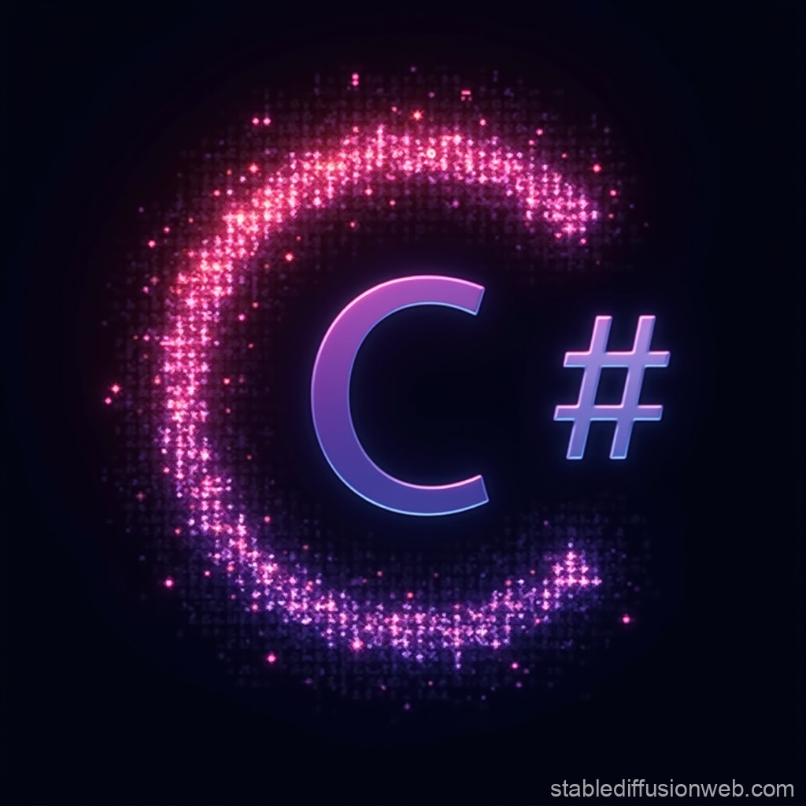

Szoftverfejlesztés
Mesterfokon
Üdvözlünk a C# DevLab interaktív felületén. Ezt a platformot azért hoztuk létre, hogy bemutassuk, miként épülnek fel azok a kódok, amelyek a háttérben irányítják a szoftvereinket.
Kiknek szól? Elsősorban szoftverfejlesztő és tesztelő diákoknak, illetve azoknak a technológia iránt érdeklődőknek, akik most ismerkednek a C# nyelvvel. Legyen szó egy saját játékmotor fizikájának megírásáról, vagy egy otthoni médiaszerver (home lab) monitorozásáról, minden a stabil alapokon nyugszik.
A weblapon található kódok futtatható példák, melyeket leteszteltünk és validáltunk. A cél nem a száraz elmélet, hanem a valós, gyakorlatias programozói gondolkodásmód átadása.
Vágjunk bele »
01. Változók
Adatok tárolása és memóriakezelés. Hogyan definiáljuk egy 3D-s, böngészőből futó játéktérben a játékos pozícióját, a játékosfizikát vagy az ütközési mechanikákat? A változók jelentik az alapot ahhoz is, hogy egy szerver hardveres paramétereit – mint például a szabad RAM mennyiségét – pontosan nyomon kövessük. Ebben a szekcióban a típusos adatkezelés legfontosabb lépéseit mutatjuk be.
02. Elágazások
Kritikus döntéshozatal a kódban. A programjaink ritkán futnak egyetlen egyenes vonalon. Elágazásokkal (If-Else logikákkal) irányítjuk a folyamatokat: például hogyan reagáljon a hálózat, ha egy másodlagos routert bridge módba kapcsolunk, vagy miként döntsön a játékmotor, ha egy küldetés során a játékos elér egy adott ellenőrzőpontot. Itt dől el a szoftver intelligenciája.
03. Ciklusok
Automatizált feladatok és adathalmazok kezelése. Egy folyamatosan futó játékhurok (game loop) elképzelhetetlen ciklusok nélkül. Ugyanígy elengedhetetlenek akkor is, ha egy otthoni szerverkörnyezet (home lab) Docker konténereit, futó szolgáltatásait (például médiaszervereket és DNS szűrőket) szeretnénk automatikusan monitorozni és listázni. Megmutatjuk, hogyan spórol a kódolás során a foreach rengeteg időt.